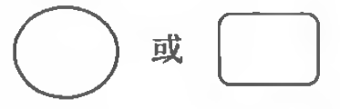
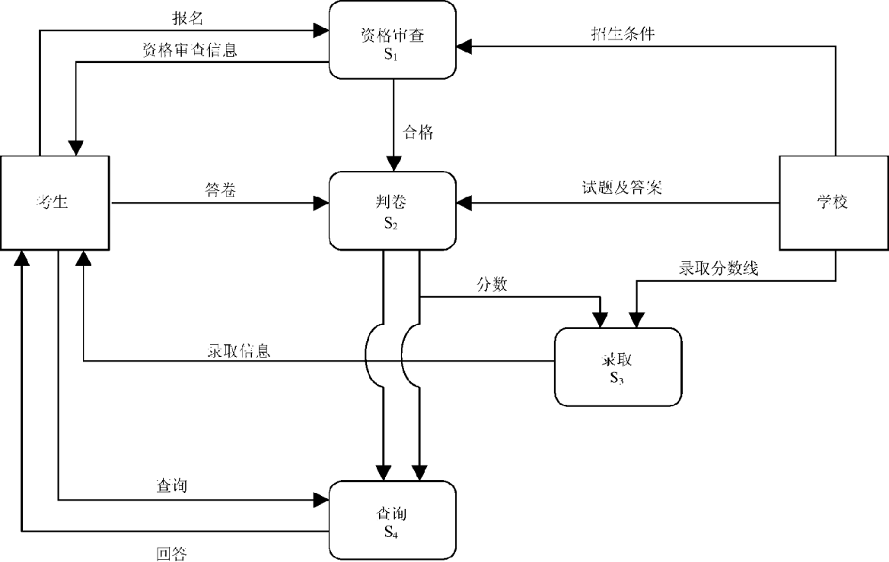
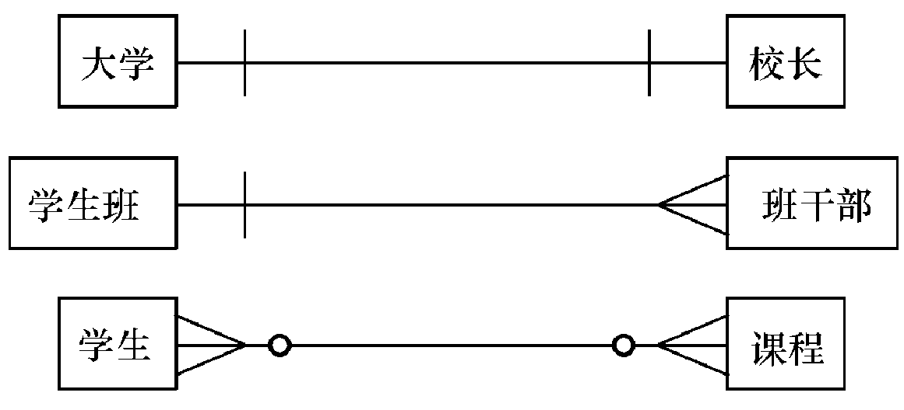
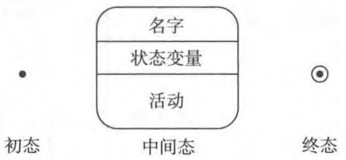
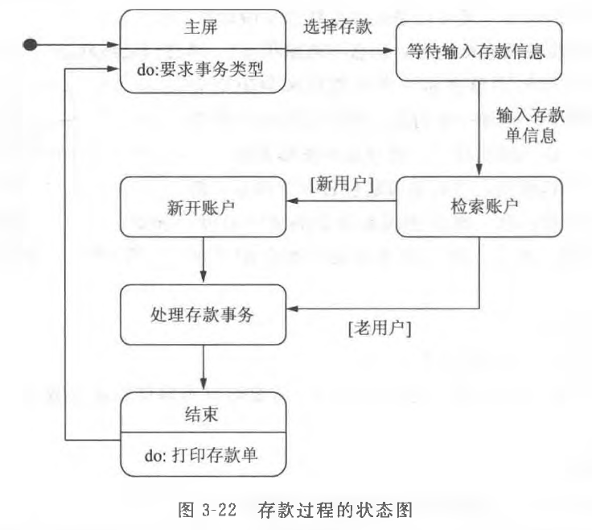

第3章 软件需求获取与结构化分析方法
1 需求获取与需求分析阶段的任务¶
2 结构化分析方法¶
传统的分析建模方法。英文为 structured analysis (SA)。
最有代表性的是一种面向数据流进行需求分析的方法。
结构化分析方法建立的结构化分析模型如下：

| 要素 | 解释 |
|---|---|
| 数据字典 | 核心，包括在目标系统中使用和生成的所有数据对象 |
| 数据流图（DFD） Data Flow Diagram |
用于功能建模，描述数据在系统中如何被传送或变换，以及描述如何对数据流进行变换的功能 |
| 实体-关系图（ER图） Entity-Relationship Diagram |
用于数据建模，描述数据对象及数据对象之间的关系 |
| 状态-迁移图（STD） State Transition Diagram |
用于行为建模，描述系统对外部事件如何响应、如何动作 |
2.1 功能建模 - 数据流图 DFD¶
功能建模的思想就是用抽象模型的概念，按照软件内部数据传递、变换的关系，自顶向下逐层分解，直到找到满足功能要求的所有可实现的软件为止。
2.1.1 数据流图的基本图形符号¶
| 符号 | 含义 |
|---|---|
|  | 加工。对输入数据进行变换以产生输出数据，其中要注明加工的名字。 |
 |
外部实体，即数据输入源（source）或数据输出汇点（sink）。其中要注明数据源或数据汇点的名字。 |
 |
数据存储。要用名词或名词性短语为数据存储命名。 |
 |
数据流。描述被加工数据及传递方向。箭头旁边要注明数据流的名字，可用名词或名词性短语命名。 |
当有多个数据流流向一个加工，或一个加工产生两个及以上的数据流，这些数据流往往会存在一定关系，用以下符号表示：
2.1.2 环境图(context diagram)¶
也称为顶层数据流图 / 0 层数据流图。
仅包括一个数据处理过程，也就是要开发的目标系统。
作用：是确定系统在其环境中的位置，通过确定系统的输入和输出与外部实体的关系确定其边界。
典型的环境图：
招生系统的环境图示例：
2.1.3 数据流图的分层¶
对于稍微复杂一些的实际问题，在数据流图上常常出现十几个甚至几十个加工，这样的数据流图看起来不直观，不易理解。可以将数据流图分层。
按照系统的层次结构进行逐步分解，并以分层的数据流图反映这种结构关系，能清楚地表达整个系统，也容易理解。
招生系统的环境图的分层示例：

数据流图分层示意图：

2.1.4 实例研究：银行储蓄系统¶
银行储蓄系统的业务流程：
- 储户填写的存款单或取款单由业务员键入系统；
- 如果是存款则系统记录存款人姓名、住址（或电话号码）、身份证号码、存款类型、存款日期、到期日期、利率、密码（可选）等信息，并印出存单给储户；
- 如果是取款而且开户时留有密码，则系统首先核对储户密码，若密码正确或存款时未留密码，则系统计算利息并印出利息清单给储户。
-
要求画出分层的数据流图，并细化到2层数据流图。
-
识别外部实体及输入输出数据流
- 外部实体：储户、业务员。
- 输入数据：如果需要储户输入密码，储户才直接与系统进行交互。储户填写的存款或取款信息通过业务员键入系统，可以将存款及取款信息抽象为事务。
- 输出数据：存款单，利息清单。
-
画出环境图
-

-
画出一层数据流图

-
画出二层数据流图
-
处理存款的
- 处理取款的

2.2 数据建模 - 实体-关系图 ER图¶
在结构化分析方法中，使用实体-关系建模技术来建立数据模型。
这种技术是在较高的抽象层次（概念层）上对数据库结构进行建模的流行技术。
ER图中仅包含 3 种相互关联的元素：
- 数据对象（实体）
- 描述数据对象的属性
- 数据对象彼此间相互连接的关系
2.2.1 基本符号表示¶
| 元素 | 含义 | 表示法 |
|---|---|---|
| 数据对象（实体） | 目标系统所需要的复合信息（即具有若干不同属性的信息）的表示，可以是外部实体、事物、角色、行为或事件、组织单位、地点或结构等 | 矩形 |
| 属性 | 定义了数据对象的特征，如数据对象学生的学号、姓名、性别、专业等，课程的课程编号、课程名称、学分等 | 椭圆或圆角矩形，用无向边将属性和实体连接起来 |
| 关系 | 不同数据对象的实例之间具有的关联关系 | 无向边，两端应标识出关联实例的数量，也称为关联的重数。 |
| 关系的属性 | 关系本身具有的属性，在多对多的关系中尤其常见 | 在表示关系的无向边上再加一个菱形框，并在菱形框中标明关系的名字，属性同样用椭圆形或圆角矩形表示，并用无向边将关系与其属性连接起来。 |

2.2.2 关联数量的表示¶
关联可以从重数角度分为 3 种：
- 一对一（1:1）关联
- 一对多（1:m）关联
- 多对多（m:n）关联
实例关联还有必须和可选之分。
在ER图中用圆圈表示所关联的实例是可选的，隐含表示“0”，没有出现圆圈就意味着是必须的。出现在连线上的短竖线可以看成是“1”。

举例：

2.2.3 实例研究：银行储蓄系统¶

2.3 行为建模 - 状态-迁移图 STD¶
通过描绘系统的状态及引起系统状态转换的事件，来表示系统的行为。
又称状态转换图，简称状态图。
2.3.1 基本符号表示¶
| 元素 | 含义 | 表示法 | 备注 |
|---|---|---|---|
| 状态 | 是任何可以被观察到的系统行为模式，规定了系统对事件的响应方式。系统对事件的响应，既可以是做一个（或一系列）动作，也可以是仅仅改变系统本身的状态，还可以是既改变状态又做动作。 |  初态是实心圆，中间态是圆角矩形，终态是牛眼图形 活动部分的语法： 事件名（参数表）/ 动作表达式 |
一张图只能有一个初态，可以有多个终态或者没有。中间态包含三个部分，第二、第三部分可选。 “事件名”可以是任何事件的名称，需要时可以为事件指定参数表；“动作表达式”指定应做的动作。 |
| 状态转换 | 两个状态之间带箭头的连线 | 带箭头的连线。 状态的变迁通常是由事件触发的，在箭头线上方标注触发转换的事件表达式。 |
源状态的内部活动执行完之后自动触发转换，则箭头线上不标注事件。 |
| 事件 | 事件是在某个特定时刻发生的事情，它是对引起系统做动作或状态转换的外部事件的抽象。 | 事件表达式的语法如下： 事件说明 [守卫条件] / 动作表达式 |
(1) 事件说明的语法如下：事件名（参数表） (2) 守卫条件是一个布尔表达式。事件发生且布尔表达式为真则发生状态转换；没有事件说明则状态是否转换取决于守卫条件。 (3) 动作表达式是一个过程表达式，当状态转换开始时执行该表达式。 |
常用的 3 种标准事件名：
- entry：事件指定进入该状态的动作
- exit：事件指定退出该状态的动作
- do：事件则指定在该状态下的动作
2.3.2 实例研究：银行储蓄系统¶
存款过程状态图：

取款过程状态图：